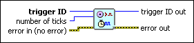

Fire Software-Triggered Timing Source VI
Owning Palette: Timed Structures and VIs
Requires: Base Development System (Real-Time, Windows)
Fires a software-triggered timing source. Use the Create Timing Source VI to create a software-triggered timing source.

 Add to the block diagram Add to the block diagram |
 Find on the palette Find on the palette |